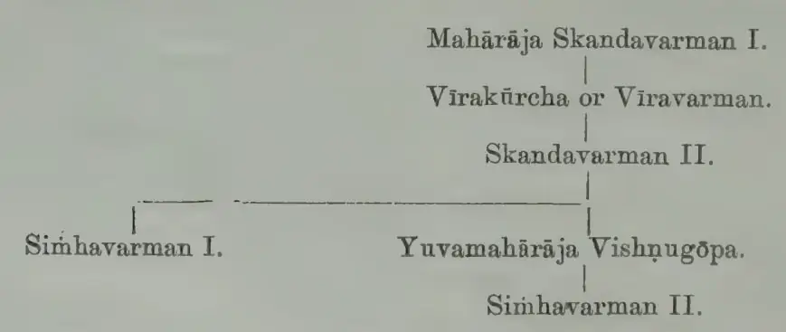

The Vayalur pillar inscription of Rajasimha II
THE VAYALUR PILLAR INSCRIPTION OF RAJASIMHA II.
BY H. KRISHNA SASTRI, B.A., RAO BAHADUR, OOTACAMUND.
Vāyalūr is a small village on the north bank of the river Pālār at its mouth and is situated three miles south of the historic town of Sadras once the chief seat of the powerful Dutch Factory and 22 miles south-east by south of Chingleput on the South-Indian Railway. The village is also reached direct from Madras by the Buckingham Canal and would then be 43 miles due south of it, past Mahābalipuram, the famous “Seven Pagodas” of Pallava antiquities.
The Śiva temple of Vyāghrapuriśvara at Vāyalūr was first examined by the Epigraphical Department, Madras, in 1908 and its lithic records were then completely secured.2 The earliest of these, from the palæographical and historical points of view, is No. 368 of 1908 which is published for the first time below with a facsimile plate.3 The other records of Vāyalūr, which are not quite so interesting as the present one, range in date from the 10th to the 16th Century A.D. and mention the village by its surname Jananāthanallūr; and the god of the temple also is therein called Tiruppilavāyil-uđaiya-Nāyanār, i.e., ‘the lord of Tiruppilavāyil,’ thus supplying the proper name Tiruppilavāyil or Tiruppilavāyal, i.e., ‘the mouth of the sacred cave’ of which
1 The meaning of this Tami attribute is ‘he who established his title as the hereditary servant (of Raṅga-nātha)’ and corresponds to the Sanskrit Vaṅṭa-krama-mūla-bhritya which occurs in the Lakshmī-Kāoya referred to above.
2 These are registered as Nos. 362 to 368 in Appendix B to the Epigraphical Report for 1909, p. 39 f.
3 From impressions prepared by myself with the help of my friends Messrs. Venkoba Rao and Srinivasa Rao,
evidently the present name Vāyalūr is a relic. The current name Vyāghrapuriśvara, i.e., 'the lord of Vyāghrapuri,' is a Sanskrit translation from Pilavāyal which was somehow connected by mistaken analogy with Pulivāyal.
The importance of the record under publication was first brought to notice in my Annual Report on Epigraphy (Madras) for 1908-9, Part II, paragraphs 16 and 17. Since then Professor Jouveau Dubreuil of Pondicherry has discussed its contents in detail in Chapter II of his work "The Pallavas" published in 1917 and has given there the facsimile of a part of the inscription. The present paper supplying the deficiency by giving a complete facsimile of the record which was examined in situ attempts to discuss certain discrepancies in the readings of Professor Dubreuil and to examine certain other points in the chronology of the Pallavas to which the book of the Professor has given publicity.
The dilapidated temple of Vyāghrapuriśvara at Vāyalūr must have had its palmy days when its prākāra wall, subordinate shrines, manđapas and vimāna were in a perfectly good condition. The central shrine, which is now the only standing structure, has the gajapṛrishṭha or the elephant-back form peculiar to many Śiva temples in the Chingleput district and enshrines within it a stone liṅga.1 On the back side of the liṅga and close to the rear wall is placed a stone panel containing the group of figures Śiva, Pārvati and Kumāra, generally known in iconography by the name Sōmāskanda. The existence of such Sōmāskanda panels is a striking characteristic of the Śaiva shrines of Pallava origin; but the panels, in these cases, are invariably cut or fixed into the wall behind the liṅga. What then could the existence of this detached panel in the Vyāghrapuriśvara shrine signify? Perhaps the original temple which was founded in Pallava times disintegrated in course of time and was rebuilt, as is found to be the case with many other South-Indian temples, in some later period, only to repeat once again a second course of dilapidation, such as it now presents to us. Still another characteristic, if one is required, of the Pallava origin of the temple, consists in the many Pallava pillars with large cubical sections intercepted by an octagonal middle, bearing medallions of lotus decorations on each face of the cube and plain-cut corbels.2 These pillars are largely found in the east gōpura—the main outer entrance into the temple; and one of them—the one on the right side as one enters—has on it the subjoined record inscribed in 14 lines of writing going round the pillar in the form of a spiral from top to bottom. Line 1 of the inscription begins on the south face of the upper cube and ends on the west. From line 2 which commences on the west, just below the lotus, and by the side of a creeper-device suggesting a branch of sprouts,3 the lines go on regularly descending so that the end of line 2 runs on to meet the commencement of line 3 on the west face until we reach line 14 on this face with which the inscription closes.
The alphabet is the usual Pallava-Grantha of the florid type used in the Rāmānuja-manđapa, the Gaṇēśa temple and the Dharmarāja-ratha inscriptions,4 of Mahābalipuram, the Balipīṭha inscription of the Shore Temple in the same village5 and the Kailāsanātha temple inscription at Conjeeveram.6 The writing is for the most part well preserved and could be completely deciphered with the exception of three or four syllables in line 2 and some doubtful letters in line 12. As regards palæography it may be remarked that the initial vowels a and i
1 The liṅga of the Vyāghrapuriśvara temple is plain and does not show the eight or sixteen facets which is one of the special features of the Śiva-liṅgas set up by the Pallava kings after Mahēndravarman I.
2 See Dubreuil's "Handbook of Dravidian Architecture," p. 33, fig. 25.
3 The name Pallava which happens to occur here is by tradition connected with a bed of sprouts; see South-Indian Inscriptions, Vol. II, p. 355.
4 Ep. Ind., Vol. X, Plates 2, 3 and 4.
5 Annual Report on Epigraphy (Madras) for 1916, Plates I and II, between pages 112 and 113.
6 South-Indian Inscriptions, Vol. II, Plate IX, facing p. 248.
occur in ll. 1, 2 and 10 and the Dravidian / in ll. 3 and 4. The punctuation symbol used in the inscription is a triple vertical joined at the top, the component lines being often of varying lengths. Two other symbols of an ornamental type occur in line 9, evidently also being used as punctuations; but these are not quite distinct. In the matter of orthography, the use of the anusvāra and its change into the class-nasal in compound letters is generally correctly observed, e.g.—Āṅgirāḥ in l. 1, Koṅkaṇiḥ in line 3 and Skanda in l. 4. The doubling of consonants after a conjunct r occurs throughout. There is one mistake of spelling in śṛita for śruṭa (l. 10); and wrong sandhi in jīyāt=ma for jīyān=ma (ibid.) and nō sa khalu for °nas=sa khalu (if my reading is correct in l. 11). In line 10 the form yubdha for yuddha is apparently a mistake of the scribe.
As stated in the Annual Report on Epigraphy (Madras) for 19091 the record is a very interesting one on account of the long list of Pallava names it supplies. When I drew up the report, I was not able to give the whole list, for want of time and a satisfactory estampage. Also the Vēlūrpālaiyam plates which give, though summarily, a similar list of names in the ancestry of the Pallavas, had not then been published, and consequently, the big list of the Vāyalūr record did not attract much attention. Thanks to the scholarly work of Professor Dubreuil in the field of South-Indian Epigraphical research and especially in the study of the Pallava dynasties, we now possess a full statement of the contents of this valuable inscription and its bearing upon Pallava chronology.
The Purāṇic names in the list from Brahmā to Aśōka (ll. 1 and 2) are found in the Kāśākuḍi plates of Nandivarman Pallavamalla2; and up to the eponymous Pallava, the predecessor of Aśōka, they are found also in the Kūram plates3 of Paramēśvaravarman I and the Udayēndiram Plates.4 Among the names of other early kings which the Kāśākuḍi plates incidentally mention are those of Virasimha and Vishṇusiminha which do not find a place in the Vāyalūr list. The Vēlūrpālaiyam plates5, which are later, give the Purāṇic names in the same order up to Aśōkavarman correctly, but after a gap supply us with the three names Kālabhartri, Chūtapallava and Virakūrcha in the order of father and son exactly as we find in l. 3 of our inscription. After these comes the name of Skandaśishya which does not figure in the Vāyalūr record. It looks, therefore, as if the authors of the Kāśākuḍi, Udayēndiram, and the Vēlūrpālaiyam plates, all of which are admittedly later than the Vāyalūr record, but not very much later, drew these stray names for airing their knowledge of early Pallava chronology purely from memory and were not always correct. The Vāyalūr record after mentioning Aśōka gives eight names, viz., Harigupta, Bhūtadatta, Sūryavarman, Vishṇugōpa, Dhṛitaka, Kalīnda, Jyāmalla and Ripumalla6 which do not appear in the later grants. After these come the thirty-six names listed by Professor Dubreuil on p. 20 of his “Pallavas” with the small difference that the name Koṅkaṇika is actually found on the estampage to be Koṅkaṇi.
Monsieur Dubreuil tries to attribute to the Vāyalūr list the credit of supplying a complete genealogical succession from even the time of the eponymous founder Pallava, including practically all the names mentioned in the Prākṛit and the Sanskrit copper-plate grants hitherto discovered and in the later stone inscriptions. In doing this he finds many difficulties in his way but attempts to get over them by finding accidental coincidence in the order of the names. In Virakūrcha, Skandaśishya, Kumāravishṇu and Buddhavarman of the Vēlūrpālaiyam plates for instance, he finds coincidence with the set of names Nos. 29 to 32 (11 to 14)7 of the Vāyalūr
1 Part II, paragraph 17, p. 76 f.
2 South-Indian Inscriptions, Vol. II, p. 342.
3 Ibid., Vol. I, p. 144.
4 Ibid., Vol. II, p. 363.
5 Ibid., p. 501.
6 Professor Dubreuil reads by mistake the two names Jyāmalla and Ripumalla as Byāmalla and Ékamalla, and Sūryavarman as Āryavarman (see his “Pallavas,” p. 20).
7 Here and below, M. Dubreuil's numbers are given in brackets.
list. Here, however, it has to be observed that Virakūrcha, whom Dubreuil selects as the first of the ruling Pallava kings, perhaps from a statement made about him in the Vēlūrpālaiyam plates, was the son of Chūtapallava and grandson of Kālabhartri—thus corresponding to No. 23 (5) of the Vāyalūr list and not to No. 29 (11). Also the three names that succeed this Virakūrcha are Chandravarman, Karāla and Vishṇugōpa and not Skandaśishya, Kumāravishṇu and Buddhavarman as Dubreuil puts it down. Again, his presumption that the Chendalūr plates must be a copy of some ancient record, suits his purpose very well; since the inconvenient names Skandavarman, Kumāravishṇu and Buddhavarman which these plates give, occur in that order in Nos. 30, 31 and 32 (12, 13 and 14) of the Vāyalūr list; but here again he forgets that the fourth name that occurs in the Chendalūr plates is a second Kumāravishṇu and not as is to be expected No. 33 (15) Skandavarman of the Vāyalūr list. The partial coincidence in the earlier Pallava names mentioned in the Vāyalūr list with those of the Chendalūr and the Vēlūrpālaiyam plates serves no practical purpose and the agreement, if any, could be attributed only to an accident by what we may call the kākatāliya-nyāya. It does not, therefore, give to the Vāyalūr list any morē completeness than what could be claimed for the Kāśākuḍi or the Vēlūrpālaiyam accounts. Perhaps Dubreuil also, though he has not expressed himself clearly on this point, meant the same thing when he said “we should not rely too much on the order of succession of the kings given in the Vāyalūr inscription after Virakūrcha (11).”1
Passing on after 32 (14) Buddhavarman to eight other kings and in the interim identifying Vishṇugōpa 37 (19) with Vishṇugōpa of Kāñchi, the well-known Pallava (?) contemporary of Samudragupta about the end of the 4th Century A.D., Professor Dubreuil says that from Viravarman 41 (No. 23) the Vāyalūr inscription becomes trustworthy, evidently again in the sense that it supplies a complete list of kings in the order of succession down to Rājasimha Narasimhavarman II. This is also extremely doubtful. The Sanskrit grants even though we may exclude the Chendalūr plates, which according to the Professor must be a copy of an older inscription giving some early names that have to be placed before the time of Viravarman, supply us with the names of only six kings whose succession in the order given below may be taken as certain:—

Of these, the Yuvamahārāja Vishṇugōpa may not have ruled. The information obtained from the Udayēndiram2 and the Churā3 copper-plates, both of which are decidedly later by reason of their palæography and are otherwise also untrustworthy, cannot be used, as has been done by Professor Dubreuil, for the purpose of obtaining a continuous Pallava succession after Simhavarman I or Simhavarman II. If this could be done, there is no reason why the names Simhavarman, Nandivarman and Simhavishṇu which occur in the Amarāvati pillar inscription of about the 12th Century A.D.4 should not be utilised for a similar purpose. Again, the assumption, in the first place, of two simultaneously ruling families, one at Kāñchi and the other in the Telugu country, and in the second place, the statement that Simhavarman 43 (25) of the
1 “The Pallavas,” p. 23.
2 Ep. Ind., Vol. III, p. 144.
3 Egigraphical Report (Madras) for 1914, p. 82.
4 S. I. I., Vol. I, p. 25.
Uruvupalli plates probably resumed possession of Kāñchi are not founded on any sure ground. We very well know that the early Pallava kings while ruling at their capital Kāñchi had their Viceroy at Dhāññakaḍa (Dhānyakaṭa) in the Telugu country. Why the later kings succeeding Skandavarman II should have chosen a different course of administration, dividing the kingdom between two ruling dynasties and why, even if this were so, the Vāyalūr inscription whose definite purpose is to describe the ancestry of king Rājasimha-Narasimhavarman II of the Palakkaḍa branch should go out of the way to include the names of the collateral Kāñchi branch 43 to 46 (Nos. 25 to 28) which according to Professor Dubreuil was altogether unconnected with it, are questions that require to be explained satisfactorily before we could follow the theory of Professor Dubreuil postulating two separate dynasties simultaneously ruling in the Telugu country and in the Tonda-maṇdalam. Again, in the set of names enumerated one after the other from Nos. 43 to 50 (25 to 32), what authority does the Professor discover to presume that while the first four ruled in a given order, the second five (omitting the first of them) ruled, not after them as should be expected, but simultaneously with them? Do not these kings possibly stand to each other in the relation of father and son as the first and the last sets of names in the list suggest or again, as the partial coincidence in the order Virakūrcha to Buddhavarman (Vēlūrpālaiyam plates) and full coincidence in Skandavarman to Nandivarman (Udayēndiram plates), indicate? In fact, therefore, the list of the names given by the Vāyalūr inscription remains to be as indefinite as those supplied by the Kāśākuḍi, Udayēndiram and the Vēlūrpālaiyam plates and there is not the least possibility of finding therein a succession list either whole or partial except after No. 49 (31) Simhavarman, the father of Simhavishṇu. Professor Dubreuil's arguments are thus seen to be vitiated by wrong identifications and gratuitous assumptions and by his acceptance as genuine material of what still remains only tentative and requires further careful examination and scrutiny.
One positive and important result, however, derived from a study of the Vāyalūr list, is that certain conclusions arrived at in my contribution on the Vēlūrpālaiyam plates require correction. The identification of Kālabharṭri with Kāṇagōpa on page 503 of the South-Indian Inscriptions, Volume II, is now untenable since both these names occur in the Vāyalūr list as Nos. 21 and 28 (3 and 10); similarly, the identification of Chūtapallava with Skandavarman and Virakūrcha with Viravarman of the Pikira and the Māṇgaḍūr grants cannot any more be upheld. The three kings Kālabharṭri, Chūtapallava and Virakūrcha mentioned in the Vēlūrpālaiyam plates must be some traditionally known very early kings of the Pallava family. Skandaśishya (possibly same as Skandavarman), Kumāravishṇu and Buddhavarman, who are mentioned in order of succession next in the Vēlūrpālaiyam plates, do not find the same place in the Vāyalūr list. There must evidently be a mistake due to the carelessness of the author of the Vēlūrpālaiyam plates in describing the relationship of Skandaśishya to Virakūrcha. Perhaps these three kings also must have been some forgotten old kings with whom the later genealogy derived from the Sanskrit copper-plate grants cannot be connected. Consequently, the probable period of about the middle of the 4th century or thereabouts for kings Simhavarman and his son Skandavarman, who, one after another, were crowned on their thrones by Āryavarman and Mādhavavarman II of the Western Gaṅga dynasty and the beginning of the 7th century fixed for Mahēndravarman I, the author of the rock-cut shrines of South India, must remain still as the only two milestones in Pallava chronology.
The two verses recorded in lines 9 to 14 of the inscription are respectively in the Vasantatilakā and the Sragdharā metres and are rather corrupt. They give the king the already known titles Rājasimha, Kshatrasimha, Yuddhārjuna, Atyantakāma, Śrimēgha, Mahāmalla, Ranajaya and Śrinidhi. The adjunct महेश्वरशिखामणिदीप्तमौलि: which occurs in these verses and which, literally rendered, means 'one whose diadem shines with the head-jewel, viz. Mahēśvara (Siva),' is rather perplexing. Comparing this with titles like Śivachūdāmaṇi etc.
and the verse यसाङ्गुष्ठमराक्रान्ता, etc. which occurs in the South-Indian Inscriptions, Volume I, Nos. 18 and 19 (v. 3) and अभिषेकजलापूर्ण etc. in ibid., Nos. 21 and 22 (v. 2)—all with reference to king Rājasimha—it looks as if the king did actually wear a figure of Śiva or rather his symbol, the linga, on his head. This fact is evidently also hinted in the verse गुणभरनामनि राजन्यनेन खिङ्गन लिङ्गिनि etc. (ibid., No. 33, v. 2), which refers to the conversion of the Pallava king Mahēndravarman I Guṇabhara from Jainism to Śaivism. Again, v. 4 of No. 34 in the same volume speaks of “Śiva fixed in the mind, being worn on the head.” All these references clearly point to the existence of a linga-cult long before the revival of the Vira-Saiva faith under the auspices of the famous Kalachuri minister Basava (Chenna-Basava) in which the wearing of the linga plays a prominent part. Again, the sense of the two verses, particularly that of the second, is such that it suggests the occasion for the engraving of this record to be the accession of king Rājsimha to the throne. This, if it were so meant, would indeed have been a fitting opportunity to eulogise his many acts of heroism, charity and piety, and to proclaim to all subjects his assumption of power over his hereditary dominions.
TEXT.1
- 1 ब्रह्मा || अङ्गिर[तः] || बृहस्पतिः || शं[युः] || भ[र]दाजः || द्रोणः ||
अश्वत्थामा [||*] - 2 पल्लवः || अशोकः || हरिगुप्तः || [भूत]दत्तः || [सूर्यवर्मा
[||] . . . विष्णु]गोपः || धृतः - 3 [कः] [||*] [क]ठिन्दः || ज्यामलः[ः] || रि]पुमलः [*||] विमलः
|| कोङ्क्षिः [|| क]ाक्भर्ता ||*] चूतपल्लव[ः] || वीरकू[चः] ||
चन्द्रवर्मा - 4 || कराकः || विष्णुगोपः || स्कन्दमूलः [||] काणगोपः || वीरकूचः : ||
[स्क]न्दवम्[र्ि] || कुमारविष्णुः - 5 || बुद्धवर्मा [||] स्कन्दवर्मा || कुमारविष्णुः || बुद्धवर्मा || स्कन्दवर्मा
|| विष्णुगो- - 6 पः || विष्णुदा[स]ः || स्कन्दवम्[र्ि] || सिंहवर्मा || वीरवर्मा ||
स्कन्दवर्मा || सिं- - 7 हवर्मा || स्कन्दवर्मा || नन्दिवर्मा || सिंहवर्मा [||] सिंहवर्मा
विष्णुगोपः || - 8 सिंहवर्मा || सिंहविष्णुः || महेन्द्रवर्मा || नरसिंहवर्मा || महेन्द्रव-
- 9 र्मा || परमेश्वरवर्मा ||2 श्रीपल्लवान्वयकुलाचलराजसिंहो
1 Direct from the stone.
2 This symbol which is evidently intended as a mark of punctuation is followed by another which is rather complicated. It is seen on the facsimile plate though indistinctly.
10 यः क्षत्रसिंह इति 1विश[त]पुण्यकीर्त्तः [*] जीयात्महे2श्वरशिख[।]मण्डिप्त-
मौलि[र्यु]-
11 ब्धार्जुने[।] [स] ख[लु]3 लोकनरेन्द्रसिंह[: ] [१*][श]भोः पादार[विन्दहय]-
परिचरणे नित्यमत्य-
12 न्तकामः श्रीमेघो विप्रसखाकरविभवकरे4 [व्यो]मरबोघच[न्दः]5 [*] राज्या-
न्त[।]राव[गा]हवि-6
13 दीतमहामल्लशब्द[:*] प्रजानां रक्ष[।]दीक्षाधिकारं वहतु रणजय[:*] श्रीनि-
14 धिद्दोपलक्षम्
- 1. Brahman.
- 2. Aṅgiras.
- 3. Bṛihaspati.
- 4. Śaṅmyu.
- 5. Bharadvāja.
- 6. Drōṇa.
- 7. Aśvatthāman.
- 8. Pallava.
- 9. Aśōka.
- 10. Harigupta.
- 11. Bhūtadatta.
- 12. Sūryavarman.
- 13. .....
- 14. Vishṇugōpa.
- 15. Dhṛitaka.
- 16. Kaṅlinda.
- 17. Jyāmalla.
- 18. Ripumalla.
- 19. Vimala.
- 20. Kōṇkaṇi.
- 21. Kālabhartri.
- 22. Chūtapallava.
- 23. Vīrakūrcha.
- 24. Chandravarman.
- 25. Karāla.
- 26. Vishṇugōpa.
- 27. Skandamūla.
- 28. Kāṇagōpa.
- 29. Vīrakūrcha.
- 30. Skandavarman.
- 31. Kumāravishṇu.
- 32. Buddhavarman.
- 33. Skandavarman.
- 34. Kumāravishṇu.
- 35. Buddhavarman.
- 36. Skandavarman.
- 37. Vishṇugōpa.
- 38. Vishṇudāsa.
- 39. Skandavarman.
- 40. Simhavarman.
- 41. Vīravarman.
- 42. Skandavarman.
- 43. Simhavarman.
- 44. Skandavarman.
- 45. Nandivarman.
- 46. Simhavarman.
- 47. Simhavarman.
- 48. Vishṇugōpa.
- 49. Simhavarman.
- 50. Simhavishṇu.
- 51. Mahēndravarman.
- 52. Narasimhavarman.
- 53. Mahēndravarman.
- 54. Paramēśvaravarman.
8 'his is again corrupt. Metrically one long and one short syllables are wanting. याहाहर्षवदित हामस्रश्रद्ध, appears to be a possible emendation of the latter part of the compound. Can the first part be रत्नादाच
1 Read वियुतं०.
2 Read जीयान्महे०.
3 Read द्वाज्ज्ञनस्ककल०.
4 Read करी.
6 It is difficult to rectify this corrupt passage. श्योम is perhaps a mistake for वंश and रत्नोच corrected into रत्नोच perhaps stands for रत्नाकर, an ocean. Among the numerous titles of Rājasiniha given in the Conjeeveram inscriptions the only one which ends in chandra is Udayachandrah. [Analogy with परिचरणे...काम ; and the epithets like avanidivākara, chandadanda and udayachandra would suggest that the reading might be श्रीमेचो वप्रसन्धे करविभवकरे श्योमरत्नीय चन्द्र — Ed.].
(Ll. 9 to 11.) Be he victorious, the royal lion (Rājasiṅha) on (the top of) the chief mountain of the glorious Pallava race, whose spotless fame as the lion of warriors (Kshatrasiṅha) is widely known, whose crown is resplendent with the crest-jewel, viz. Mahēśvara (Śiva), the lion among lords of kings (Narēndrasiṅha) of the whole earth, and an Arjuna in battle (Yuddhārjuna).
(Ll. 11 to 14.) May he exercise the royal prerogative and take up the vow of administering (his) subjects up to the extremities of his kingdom, as even to include the thousand-islands,1 he, who is known by the name “ the great wrestler ” (Mahāmalla) on account of his (skill in) hand-to-hand fight, who is excessively devoted (Atyantakāma) ever to serve at the pair of the lotus-feet of Śambhu (Śiva), who is the blessed cloud (Śrī-Mēgha) that makes the mass of crops, the Brahmans, prosperous, who is the Moon to the ocean of (his) race, “ the victorious in battle ” (Raṇajaya) and “ the storehouse of prosperity ” (Śrīnidhī) !
1 This is a doubtful translation of the word दीपलक्षम. I propose to take it as an avayībhāva deriving it दीपा लक्ष्यने यमिन् कर्मणि इति. [दीपा: लक्ष्य यमिन्, etc., is another suggestion—H. S.] If this interpretation is correct, it shows that the Pallava rule must have extended in the time of Rājasiṅha even to the distant islands in the ocean. The word दीपलक्षम may also be corrected into दीपलक्षात् and with आ repeated we may translate ‘ up to the thousand islands.’